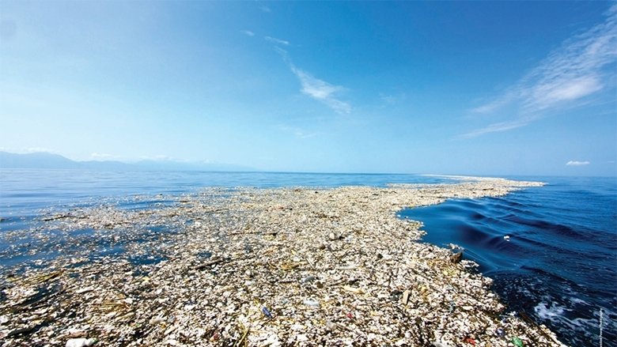

Principales amenazas a la vida marina
1. Contaminación por plásticos
Cada año, aproximadamente 8 millones de toneladas de plástico terminan en los océanos, causando la muerte de más de 100,000 animales marinos.
2. Sobrepesca
El 34% de las poblaciones de peces están sobreexplotadas, amenazando la seguridad alimentaria de millones de personas.
3. Acidificación de los océanos
Los océanos han absorbido el 30% del CO2 emitido por actividades humanas, aumentando su acidez en un 26% desde la revolución industrial.
4. Calentamiento de los océanos
El 90% del calentamiento global es absorbido por los océanos, causando blanqueamiento de corales y alteración de ecosistemas.
5. Pérdida de hábitats
El 50% de los arrecifes de coral han desaparecido y el 60% podría perderse para 2030 si no actuamos.